library(corrplot)
library(dplyr)##
## Attaching package: 'dplyr'## The following objects are masked from 'package:stats':
##
## filter, lag## The following objects are masked from 'package:base':
##
## intersect, setdiff, setequal, unionlibrary(ggplot2)
library(Hmisc)## Loading required package: lattice## Loading required package: survival## Loading required package: Formula##
## Attaching package: 'Hmisc'## The following objects are masked from 'package:dplyr':
##
## combine, src, summarize## The following objects are masked from 'package:base':
##
## format.pval, round.POSIXt, trunc.POSIXt, unitslibrary(purrr)
library(rvest)## Loading required package: xml2##
## Attaching package: 'rvest'## The following object is masked from 'package:purrr':
##
## pluck## The following object is masked from 'package:Hmisc':
##
## htmllibrary(stringr)
library(xml2)One-Size-Fits-All Interview Kit
Data Download
Data courtesy of Beer Advocate.
#' Path to download csv
data_dir <- "~/Downloads"
local_file <- sprintf("%s/beer_reviews.csv", data_dir)
if (file.exists(local_file)) {
df <- readr::read_csv(local_file)
} else {
url <- "https://github.com/timtrice/datasets/blob/master/beer_reviews/beer_reviews.tar.gz?raw=true"
destdir <- tempdir()
utils::download.file(file.path(url), zip_file <- tempfile())
utils::untar(zip_file, exdir = destdir)
df <- readr::read_csv(sprintf("%s/beer_reviews/beer_reviews.csv", destdir))
if (!dir.exists(data_dir))
dir.create(data_dir)
readr::write_csv(df, file.path(local_file))
}## Parsed with column specification:
## cols(
## brewery_id = col_integer(),
## brewery_name = col_character(),
## review_time = col_integer(),
## review_overall = col_double(),
## review_aroma = col_double(),
## review_appearance = col_double(),
## review_profilename = col_character(),
## beer_style = col_character(),
## review_palate = col_double(),
## review_taste = col_double(),
## beer_name = col_character(),
## beer_abv = col_double(),
## beer_beerid = col_integer()
## )The Variables
str(df)## Classes 'tbl_df', 'tbl' and 'data.frame': 1586614 obs. of 13 variables:
## $ brewery_id : int 10325 10325 10325 10325 1075 1075 1075 1075 1075 1075 ...
## $ brewery_name : chr "Vecchio Birraio" "Vecchio Birraio" "Vecchio Birraio" "Vecchio Birraio" ...
## $ review_time : int 1234817823 1235915097 1235916604 1234725145 1293735206 1325524659 1318991115 1306276018 1290454503 1285632924 ...
## $ review_overall : num 1.5 3 3 3 4 3 3.5 3 4 4.5 ...
## $ review_aroma : num 2 2.5 2.5 3 4.5 3.5 3.5 2.5 3 3.5 ...
## $ review_appearance : num 2.5 3 3 3.5 4 3.5 3.5 3.5 3.5 5 ...
## $ review_profilename: chr "stcules" "stcules" "stcules" "stcules" ...
## $ beer_style : chr "Hefeweizen" "English Strong Ale" "Foreign / Export Stout" "German Pilsener" ...
## $ review_palate : num 1.5 3 3 2.5 4 3 4 2 3.5 4 ...
## $ review_taste : num 1.5 3 3 3 4.5 3.5 4 3.5 4 4 ...
## $ beer_name : chr "Sausa Weizen" "Red Moon" "Black Horse Black Beer" "Sausa Pils" ...
## $ beer_abv : num 5 6.2 6.5 5 7.7 4.7 4.7 4.7 4.7 4.7 ...
## $ beer_beerid : int 47986 48213 48215 47969 64883 52159 52159 52159 52159 52159 ...
## - attr(*, "spec")=List of 2
## ..$ cols :List of 13
## .. ..$ brewery_id : list()
## .. .. ..- attr(*, "class")= chr "collector_integer" "collector"
## .. ..$ brewery_name : list()
## .. .. ..- attr(*, "class")= chr "collector_character" "collector"
## .. ..$ review_time : list()
## .. .. ..- attr(*, "class")= chr "collector_integer" "collector"
## .. ..$ review_overall : list()
## .. .. ..- attr(*, "class")= chr "collector_double" "collector"
## .. ..$ review_aroma : list()
## .. .. ..- attr(*, "class")= chr "collector_double" "collector"
## .. ..$ review_appearance : list()
## .. .. ..- attr(*, "class")= chr "collector_double" "collector"
## .. ..$ review_profilename: list()
## .. .. ..- attr(*, "class")= chr "collector_character" "collector"
## .. ..$ beer_style : list()
## .. .. ..- attr(*, "class")= chr "collector_character" "collector"
## .. ..$ review_palate : list()
## .. .. ..- attr(*, "class")= chr "collector_double" "collector"
## .. ..$ review_taste : list()
## .. .. ..- attr(*, "class")= chr "collector_double" "collector"
## .. ..$ beer_name : list()
## .. .. ..- attr(*, "class")= chr "collector_character" "collector"
## .. ..$ beer_abv : list()
## .. .. ..- attr(*, "class")= chr "collector_double" "collector"
## .. ..$ beer_beerid : list()
## .. .. ..- attr(*, "class")= chr "collector_integer" "collector"
## ..$ default: list()
## .. ..- attr(*, "class")= chr "collector_guess" "collector"
## ..- attr(*, "class")= chr "col_spec"brewery_id
describe(df$brewery_id)## df$brewery_id
## n missing distinct Info Mean Gmd .05 .10
## 1586614 0 5840 1 3130 4731 30 45
## .25 .50 .75 .90 .95
## 143 429 2372 12516 16866
##
## lowest : 1 2 3 4 5, highest: 27945 27980 27984 28000 28003continuous variable
There are no missing
brewer_idvalues.The mean is higher than 75% of the values so there is a heavy skew along the lower values for some reason. Question: Why is this? Is this relevant?
ggplot(df, aes(x = brewery_id)) + geom_histogram(bins = 50)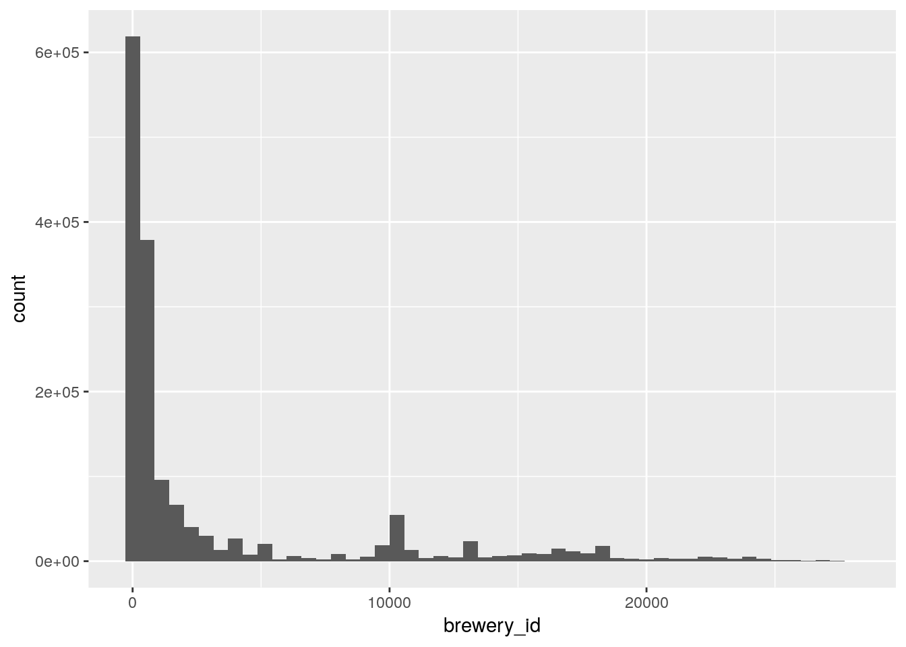
brewery_name
describe(df$brewery_name)## df$brewery_name
## n missing distinct
## 1586599 15 5742
##
## lowest : 't Hofbrouwerijke (512) Brewing Company 10 Barrel Brewing Co. 1516 Brewing Company 16 Mile Brewing Company
## highest: Zum Löwenbräu Zum Stiefel Zuma Brewing Company Zweite Schweriner Schlossbrauerei Zywiec Breweries PLC (Heineken)- Categorical variables
My expectation was for the numbers n, missing and distinct to match up with brewery_id, but they don’t. While the missing count is only slightly off (-15), the distinct count is way off (-98).
unique(df$brewery_id[is.na(df$brewery_name)])## [1] 1193 27There are only 2 missing unique brewer_id.
The discrepancy suggests some brewery’s may have multiple names for the same id.
df %>%
group_by(brewery_id) %>%
summarise(n = length(unique(brewery_name))) %>%
filter(n > 1)## # A tibble: 0 x 2
## # ... with 2 variables: brewery_id <int>, n <int>My instinct is wrong. I’ll flip it.
df %>%
group_by(brewery_name) %>%
summarise(n = length(unique(brewery_id))) %>%
filter(n > 1) %>%
arrange(brewery_name)## # A tibble: 60 x 2
## brewery_name n
## <chr> <int>
## 1 Back Street Brewery 4
## 2 Baja Brewing Company 2
## 3 Bare Bones Grill & Brewery 2
## 4 Big River Grille & Brewing Works 3
## 5 BJ's Restaurant & Brewery 4
## 6 BJ's Restaurant & Brewhouse 3
## 7 BJ's Restaurant And Brewhouse 2
## 8 Brew Moon Restaurant & Microbrewery 2
## 9 C.B. & Potts 3
## 10 Capitol City Brewing 3
## # ... with 50 more rowsOk, so 60 brewery_name have multiple brewery_id. There are also spelling discrepancies, e.g., BJ’s Restaurant & Brewery, BJ’s Restaurant & Brewhouse, BJ’s Restaurant And Brewhouse. These discrepancies will need to be cleaned.
review_time
describe(df$review_time)## df$review_time
## n missing distinct Info Mean Gmd .05
## 1586614 0 1577960 1 1.224e+09 85515630 1.071e+09
## .10 .25 .50 .75 .90 .95
## 1.107e+09 1.173e+09 1.239e+09 1.289e+09 1.311e+09 1.318e+09
##
## lowest : 840672001 884390401 884649601 885340801 885427201
## highest: 1326274454 1326275049 1326276656 1326284970 1326285348ggplot(df, aes(x = review_time)) + geom_histogram(bins = 10000)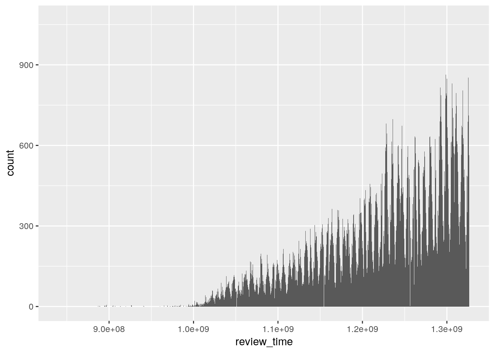
review_overall
describe(df$review_overall)## df$review_overall
## n missing distinct Info Mean Gmd .05 .10
## 1586614 0 10 0.934 3.816 0.7584 2.5 3.0
## .25 .50 .75 .90 .95
## 3.5 4.0 4.5 4.5 5.0
##
## Value 0.0 1.0 1.5 2.0 2.5 3.0 3.5 4.0 4.5
## Frequency 7 10954 12975 38225 58523 165644 301817 582764 324385
## Proportion 0.000 0.007 0.008 0.024 0.037 0.104 0.190 0.367 0.204
##
## Value 5.0
## Frequency 91320
## Proportion 0.058ggplot(df, aes(x = review_overall)) + geom_bar()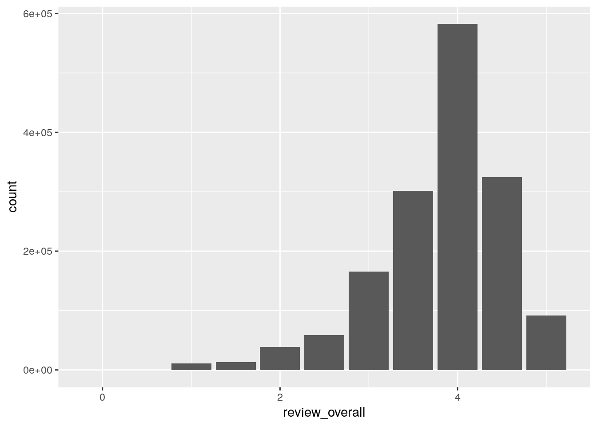
- Categorical
review_aroma
describe(df$review_aroma)## df$review_aroma
## n missing distinct Info Mean Gmd
## 1586614 0 9 0.937 3.736 0.744
##
## Value 1.0 1.5 2.0 2.5 3.0 3.5 4.0 4.5 5.0
## Frequency 6873 12524 42566 66359 200030 365312 557383 271450 64117
## Proportion 0.004 0.008 0.027 0.042 0.126 0.230 0.351 0.171 0.040ggplot(df, aes(x = review_aroma)) + geom_bar()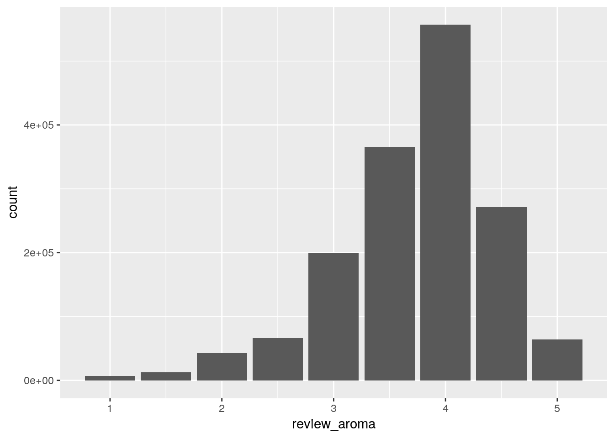
- Categorical
review_appearance
describe(df$review_appearance)## df$review_appearance
## n missing distinct Info Mean Gmd .05 .10
## 1586614 0 10 0.908 3.842 0.6436 3.0 3.0
## .25 .50 .75 .90 .95
## 3.5 4.0 4.0 4.5 4.5
##
## Value 0.0 1.0 1.5 2.0 2.5 3.0 3.5 4.0 4.5
## Frequency 7 3323 6147 25414 39493 166009 318529 674186 288108
## Proportion 0.000 0.002 0.004 0.016 0.025 0.105 0.201 0.425 0.182
##
## Value 5.0
## Frequency 65398
## Proportion 0.041ggplot(df, aes(x = review_appearance)) + geom_bar()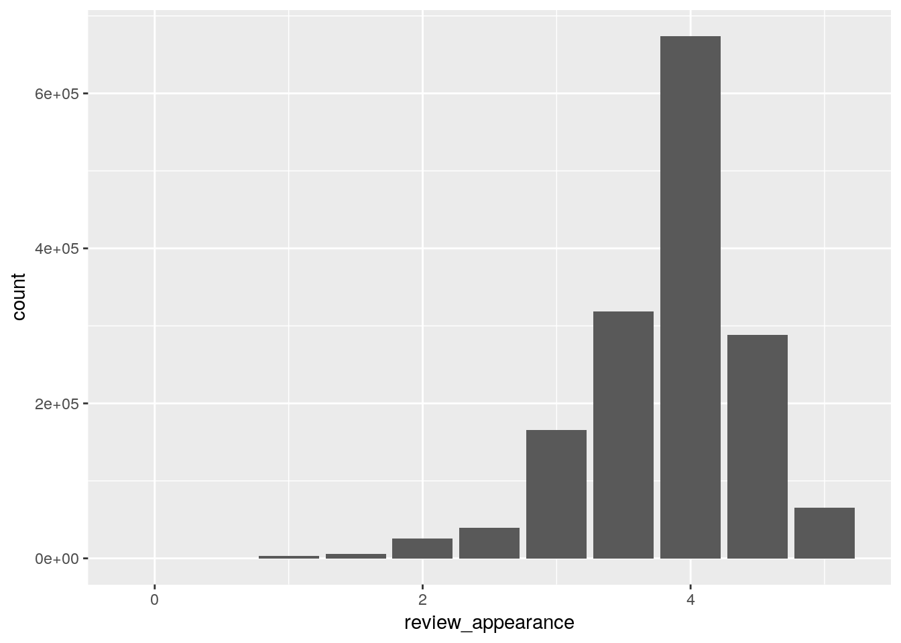
- Categorical
review_profilename
describe(df$review_profilename)## df$review_profilename
## n missing distinct
## 1586266 348 33387
##
## lowest : 0110x011 01Ryan10 02maxima 03SVTCobra 04101Brewer
## highest: zythus Zywiec06 zyzygy zzajjber Zzyzx- Categorical
beer_style
describe(df$beer_style)## df$beer_style
## n missing distinct
## 1586614 0 104
##
## lowest : Altbier American Adjunct Lager American Amber / Red Ale American Amber / Red Lager American Barleywine
## highest: Vienna Lager Weizenbock Wheatwine Winter Warmer Witbier- Categorical
review_palate
describe(df$review_palate)## df$review_palate
## n missing distinct Info Mean Gmd
## 1586614 0 9 0.928 3.744 0.7227
##
## Value 1.0 1.5 2.0 2.5 3.0 3.5 4.0 4.5 5.0
## Frequency 6874 11045 38333 62842 206932 338585 606711 253102 62190
## Proportion 0.004 0.007 0.024 0.040 0.130 0.213 0.382 0.160 0.039ggplot(df, aes(x = review_palate)) + geom_bar()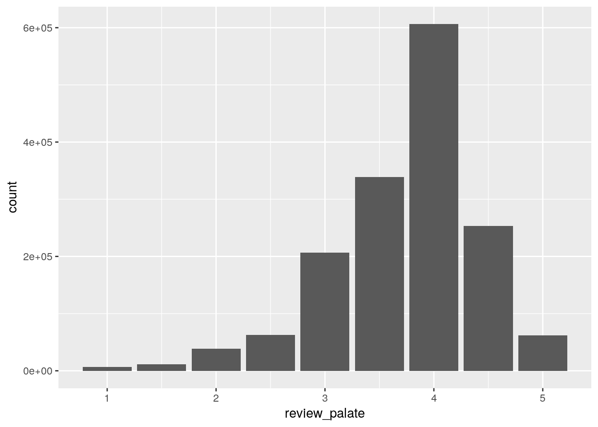
- Categorical
review_taste
describe(df$review_taste)## df$review_taste
## n missing distinct Info Mean Gmd
## 1586614 0 9 0.941 3.793 0.7766
##
## Value 1.0 1.5 2.0 2.5 3.0 3.5 4.0 4.5 5.0
## Frequency 9991 15128 41992 66534 166860 324541 541429 336162 83977
## Proportion 0.006 0.010 0.026 0.042 0.105 0.205 0.341 0.212 0.053ggplot(df, aes(x = review_taste)) + geom_bar()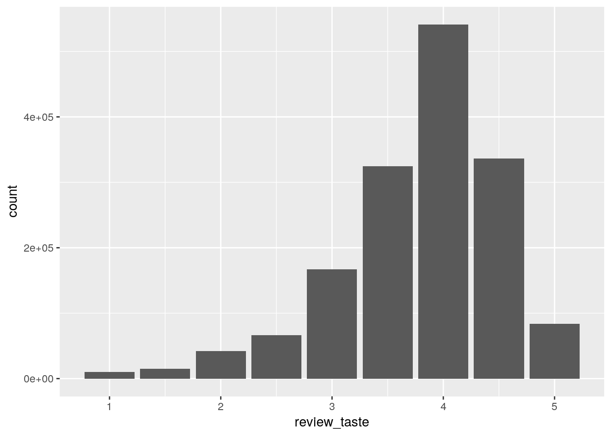
- Categorical
beer_abv
describe(df$beer_abv)## df$beer_abv
## n missing distinct Info Mean Gmd .05 .10
## 1518829 67785 530 0.999 7.042 2.47 4.5 4.8
## .25 .50 .75 .90 .95
## 5.2 6.5 8.5 10.0 11.0
##
## lowest : 0.01 0.05 0.08 0.10 0.25, highest: 39.00 39.44 41.00 43.00 57.70df %>%
filter(!is.na(beer_abv)) %>%
ggplot(aes(x = beer_abv)) +
geom_freqpoly(bins = 10)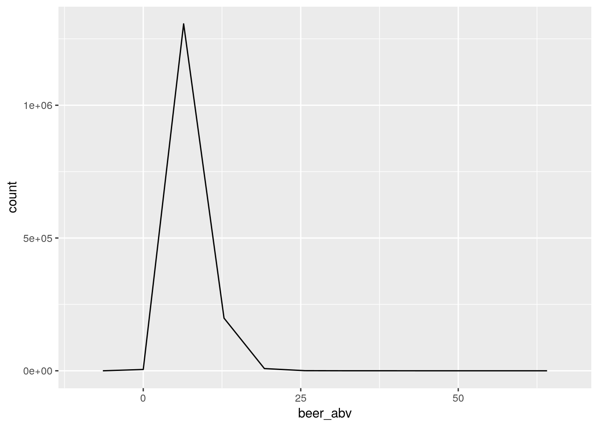
- Continuous
beer_name
describe(df$beer_name)## df$beer_name
## n missing distinct
## 1586614 0 56857
##
## lowest : ! (Old Ale) ? (Imperial Bitter) ? The Riddler ? ¿Por Que No? .357 Imperial Pilsner
## highest: ZZ Lager Þorrabjór Ω-naught (Omeganaught) 横須賀ビアサケ (Yokosuka Biasake) 葉山ビール (Hayama Beer)beer_beerid
describe(df$beer_beerid)## df$beer_beerid
## n missing distinct Info Mean Gmd .05 .10
## 1586614 0 66055 1 21713 23983 213 577
## .25 .50 .75 .90 .95
## 1717 13906 39441 55183 62653
##
## lowest : 3 4 5 6 7, highest: 77313 77314 77315 77316 77317ggplot(df, aes(x = beer_beerid)) + geom_histogram(bins = 50)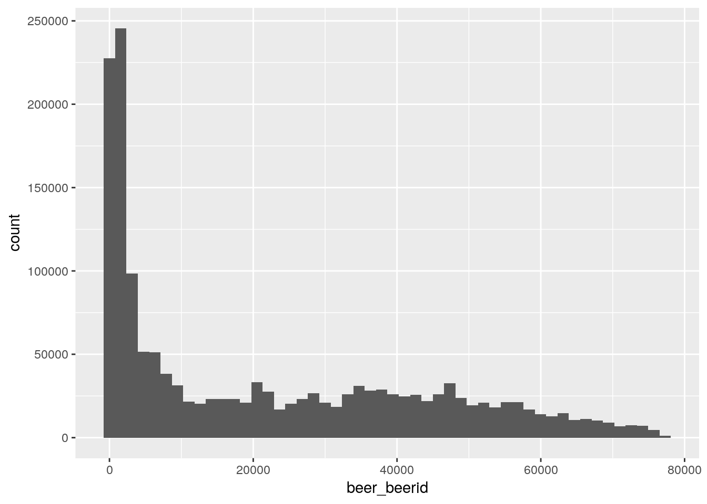
Data Cleaning
There are four variables I’m most concerned about that will need to be cleaned: brewery_id, brewery_name, beer_name and beer_beerid.
Recall again the list of brewery names that had more than one brewery id:
df %>%
group_by(brewery_name) %>%
summarise(n = length(unique(brewery_id))) %>%
filter(n > 1) %>%
arrange(brewery_name)## # A tibble: 60 x 2
## brewery_name n
## <chr> <int>
## 1 Back Street Brewery 4
## 2 Baja Brewing Company 2
## 3 Bare Bones Grill & Brewery 2
## 4 Big River Grille & Brewing Works 3
## 5 BJ's Restaurant & Brewery 4
## 6 BJ's Restaurant & Brewhouse 3
## 7 BJ's Restaurant And Brewhouse 2
## 8 Brew Moon Restaurant & Microbrewery 2
## 9 C.B. & Potts 3
## 10 Capitol City Brewing 3
## # ... with 50 more rowsI established earlier that brewery id’s only have one unique brewery name. I’ll go through each name on this list and try to iron out the discrepancies.
Brewery Name Data Validation
I’ll start first with “Back Street Brewery”. I want to list all distinct brewery_name values that begin with “Back St” (use the common St abbreviation to capture both St and Street).
df %>%
filter(grepl("^Back St", brewery_name)) %>%
select(starts_with("b")) %>%
distinct(brewery_name, .keep_all = TRUE)## # A tibble: 1 x 6
## brewery_id brewery_name beer_style beer_name beer_abv beer_beerid
## <int> <chr> <chr> <chr> <dbl> <int>
## 1 4410 Back Street Brewery Altbier Alt NA 58971There is only one Back St. What about distinct brewery_id values?
df %>%
filter(grepl("^Back St", brewery_name)) %>%
select(starts_with("b")) %>%
distinct(brewery_id, .keep_all = TRUE)## # A tibble: 4 x 6
## brewery_id brewery_name beer_style
## <int> <chr> <chr>
## 1 4410 Back Street Brewery Altbier
## 2 15327 Back Street Brewery Hefeweizen
## 3 12164 Back Street Brewery American Amber / Red Ale
## 4 10012 Back Street Brewery Belgian Strong Dark Ale
## # ... with 3 more variables: beer_name <chr>, beer_abv <dbl>,
## # beer_beerid <int>Ok, there are a few different brewery_id values for this brewery. I’m a bit stuck on how I can validate the legitimacy (or lack thereof) on these values.
Are there multiple “Back Street Brewery”? Or, is this a crowd-sourcing error (Yelp is bad with this, too).
Thankfully, the Beer Advocate website happens to have addresses. We can plug brewery_id into a URL and scrape the address info.
Let me go grab the brewery ids.
brewery_ids <- df %>%
filter(grepl("^Back St", brewery_name)) %>%
select(starts_with("brew")) %>%
distinct() %>%
pull(brewery_id)
brewery_ids## [1] 4410 15327 12164 10012Now I’ll write a little scraping function that will return the addresses for each of the breweries.
get_addresses <- function(brewery_id) {
url <- glue::glue("https://www.beeradvocate.com/beer/profile/{brewery_id}/")
xml2::read_html(url) %>%
rvest::html_nodes(xpath = "//*[(@id = 'info_box')]") %>%
rvest::html_text()
}Get the addresses.
addresses <- map(brewery_ids, get_addresses) %>%
trimws() %>%
str_split(pattern = "[:cntrl:]+") %>%
# All address info seems to be in the 3rd element so just grab those.
map(`[`, 3)
addresses## [[1]]
## [1] "14450 Culver DriveIrvine, California, 92604United States(949) 857-0160 | maplamppostpizza.com"
##
## [[2]]
## [1] "78-772 Highway 111La Quinta, California, 92253United States(760) 564-4568 | maplamppostpizza.com"
##
## [[3]]
## [1] "15 Main Street, Suite #100Vista, California, 92084United States(760) 407-7600 | maplamppostpizza.com"
##
## [[4]]
## [1] "27702 Crown Valley ParkwayLadera Ranch, California, 92691United States(949) 388-7260 // CLOSED //"I can do a visual analysis and see none of these are a match. In other words, it looks like we’re dealing with a franchise. With that said, “Back Street Brewery” should not be corrected.
I’m going to modify get_addresses() to take the pattern I’m searching (in the example above, “^Back St”) and just return the results. I don’t want to keep typing all of that code.
#' @title get_addresses
#' @description Given a dataframe (x) and a pattern for brewery_name, will
#' return all addresses for breweries that match that pattern.
#' @param x Dataframe object
#' @pattern regex pattern for brewery names to find
get_addresses <- function(x, pattern) {
x %>%
filter(grepl(pattern, brewery_name)) %>%
select(starts_with("brew")) %>%
distinct() %>%
pull(brewery_id) %>%
sprintf("https://www.beeradvocate.com/beer/profile/%s/", .) %>%
map(read_html) %>%
map(html_nodes, xpath = "//*[(@id = 'info_box')]") %>%
map(html_text) %>%
str_split(pattern = "[:cntrl:]+") %>%
map(`[`, 4)
}I’ll test it.
get_addresses(df, "^Back St")## [[1]]
## [1] "14450 Culver DriveIrvine, California, 92604United States(949) 857-0160 | maplamppostpizza.com"
##
## [[2]]
## [1] "78-772 Highway 111La Quinta, California, 92253United States(760) 564-4568 | maplamppostpizza.com"
##
## [[3]]
## [1] "15 Main Street, Suite #100Vista, California, 92084United States(760) 407-7600 | maplamppostpizza.com"
##
## [[4]]
## [1] "27702 Crown Valley ParkwayLadera Ranch, California, 92691United States(949) 388-7260 // CLOSED //"[[satisfied face meme]]
Ok, now I just need to go through our discrepancies. It would be nice to write a function to do this as well. But the pattern requires human involvement; oh, well.
Of the known items with possible issues, only those that immediately follow had true issues.
Bare Bones Grill & Brewery
ptn <- "^Bare\\s"#' Find all possible matches
df %>% filter(grepl(ptn, brewery_name)) %>%
select(starts_with("brew")) %>%
distinct(brewery_id, .keep_all = TRUE)## # A tibble: 2 x 2
## brewery_id brewery_name
## <int> <chr>
## 1 1953 Bare Bones Grill & Brewery
## 2 1954 Bare Bones Grill & Brewery#' List addresses
get_addresses(df, ptn)## Error in open.connection(x, "rb"): HTTP error 404.In this case, the page for id 1953 no longer exists. So, there is no way to validate the discrepancy. In this case I will update all 1953 brewery_id values to 1954.
df$brewery_id[df$brewery_id == 1953] <- 1954## Warning: closing unused connection 5 (https://www.beeradvocate.com/beer/
## profile/1953/)Rocky Coulee Brewing Co.
ptn <- "^Rocky\\sC"#' Find all possible matches
df %>% filter(grepl(ptn, brewery_name)) %>%
select(starts_with("brew")) %>%
distinct(brewery_id, .keep_all = TRUE)## # A tibble: 2 x 2
## brewery_id brewery_name
## <dbl> <chr>
## 1 13094 Rocky Coulee Brewing Co.
## 2 12984 Rocky Coulee Brewing Co.#' List addresses
get_addresses(df, ptn)## [[1]]
## [1] "205 N. First StreetOdessa, Washington, 99159United States(509) 345-2216 | maprockycouleebrewingco.com"
##
## [[2]]
## [1] "205 N. First StreetOdessa, Washington, 99159United States(509) 346-2216 // CLOSED //"“Rocky Coulee Brewing Co.” has two identical entries in the database. The only difference in the address listings is one digit in the phone number.
I’ll update those with brewery_id 13094 to 12984.
df$brewery_id[df$brewery_id == 13094] <- 12984Exploratory
cc <- df[complete.cases(df),] %>%
select(starts_with("review"), -review_time, -review_profilename, beer_abv)cor(cc)## review_overall review_aroma review_appearance
## review_overall 1.0000000 0.6127926 0.4985565
## review_aroma 0.6127926 1.0000000 0.5590771
## review_appearance 0.4985565 0.5590771 1.0000000
## review_palate 0.6990197 0.6149238 0.5645551
## review_taste 0.7871712 0.7147773 0.5445794
## beer_abv 0.1384574 0.3325362 0.2638906
## review_palate review_taste beer_abv
## review_overall 0.6990197 0.7871712 0.1384574
## review_aroma 0.6149238 0.7147773 0.3325362
## review_appearance 0.5645551 0.5445794 0.2638906
## review_palate 1.0000000 0.7322005 0.2866673
## review_taste 0.7322005 1.0000000 0.2907817
## beer_abv 0.2866673 0.2907817 1.0000000Most positive relationship seems to be between review_overall and review_taste. I want to take the mean review_overall and review_taste per beer_beerid and draw a scatterplot.
df %>%
group_by(beer_beerid) %>%
summarise(mean_review_overall = mean(review_overall, na.rm = TRUE),
mean_review_taste = mean(review_taste, na.rm = TRUE)) %>%
ggplot(aes(x = mean_review_overall, y = mean_review_taste)) +
geom_point() +
geom_smooth()## `geom_smooth()` using method = 'gam'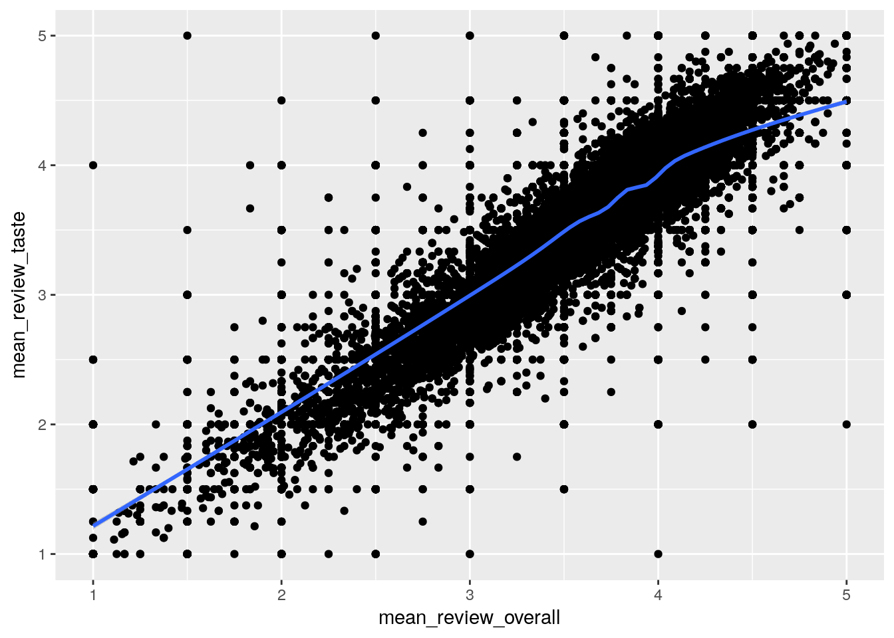
Is this really surprising?
Next to taste is review_palate; let’s check that out.
df %>%
group_by(beer_beerid) %>%
summarise(mean_review_overall = mean(review_overall, na.rm = TRUE),
mean_review_aroma = mean(review_aroma, na.rm = TRUE)) %>%
ggplot(aes(x = mean_review_overall, y = mean_review_aroma)) +
geom_point() +
geom_smooth()## `geom_smooth()` using method = 'gam'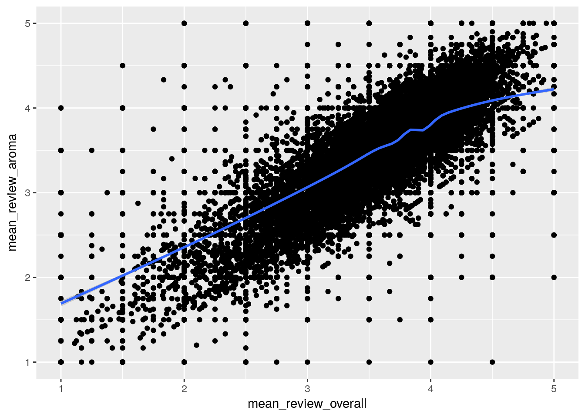
I’m curious what type of
df %>%
select(beer_beerid, review_overall, review_aroma, review_taste) %>%
mutate(
review_class = case_when(
review_overall < 1 ~ "A",
review_overall < 2 ~ "B",
review_overall < 3 ~ "C",
review_overall < 4 ~ "D",
TRUE ~ "E")) %>%
group_by(beer_beerid) %>%
summarise(mean_review_aroma = mean(review_aroma, na.rm = TRUE)) %>%
ggplot(aes(x = review_class, y = mean_review_aroma)) %>%
geom_boxplot()## Error: Mapping must be created by `aes()` or `aes_()`R Session Info
pander::pander(sessionInfo())R version 3.4.1 (2017-06-30)
**Platform:** x86_64-pc-linux-gnu (64-bit)
locale: LC_CTYPE=en_US.UTF-8, LC_NUMERIC=C, LC_TIME=en_US.UTF-8, LC_COLLATE=en_US.UTF-8, LC_MONETARY=en_US.UTF-8, LC_MESSAGES=C, LC_PAPER=en_US.UTF-8, LC_NAME=C, LC_ADDRESS=C, LC_TELEPHONE=C, LC_MEASUREMENT=en_US.UTF-8 and LC_IDENTIFICATION=C
attached base packages: methods, stats, graphics, grDevices, utils, datasets and base
other attached packages: bindrcpp(v.0.2), stringr(v.1.2.0), rvest(v.0.3.2), xml2(v.1.1.1), purrr(v.0.2.3), Hmisc(v.4.0-3), Formula(v.1.2-2), survival(v.2.41-3), lattice(v.0.20-35), ggplot2(v.2.2.1), dplyr(v.0.7.4) and corrplot(v.0.77)
loaded via a namespace (and not attached): pander(v.0.6.1), splines(v.3.4.1), colorspace(v.1.3-2), htmltools(v.0.3.6), mgcv(v.1.8-22), yaml(v.2.1.14), base64enc(v.0.1-3), rlang(v.0.1.2), foreign(v.0.8-69), glue(v.1.1.1), RColorBrewer(v.1.1-2), bindr(v.0.1), plyr(v.1.8.4), munsell(v.0.4.3), blogdown(v.0.1), gtable(v.0.2.0), htmlwidgets(v.0.9), evaluate(v.0.10.1), labeling(v.0.3), latticeExtra(v.0.6-28), knitr(v.1.17), curl(v.2.8.1), htmlTable(v.1.9), Rcpp(v.0.12.13), acepack(v.1.4.1), readr(v.1.1.1), scales(v.0.5.0), backports(v.1.1.1), checkmate(v.1.8.4), gridExtra(v.2.3), hms(v.0.3), digest(v.0.6.12), stringi(v.1.1.5), bookdown(v.0.5), grid(v.3.4.1), rprojroot(v.1.2), tools(v.3.4.1), magrittr(v.1.5), lazyeval(v.0.2.0), tibble(v.1.3.4), cluster(v.2.0.6), pkgconfig(v.2.0.1), Matrix(v.1.2-11), data.table(v.1.10.4), assertthat(v.0.2.0), rmarkdown(v.1.6), httr(v.1.3.1), R6(v.2.2.2), rpart(v.4.1-11), nlme(v.3.1-131), nnet(v.7.3-12) and compiler(v.3.4.1)